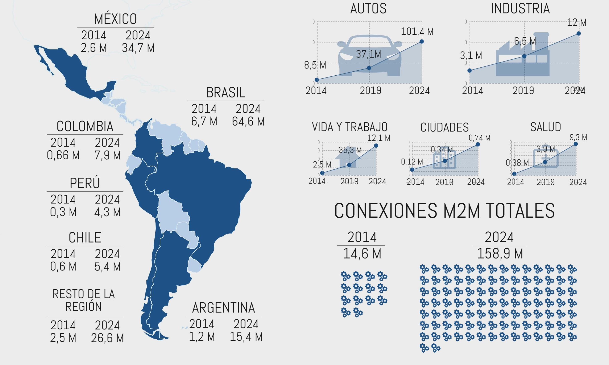

En el año del 2015 la revista Dinero predice que en el área de la tecnología las ganancias producidas por IoT van a hacer $6.5 billones de dólares[13]
IoT es una subparte de la tecnología que está creciendo de manera exponencial en Colombia, incluso los laboratorios Bell afirman que en el año 2020 habrá más de 100 millones de dispositivos conectados.[14]

Para el país en particular supone un reto muy grande para los compañías tecnológicas en materia de innovación, primero por la infraestructura que falta en las ciudades y áreas urbanas ya que tiene un déficit grande con las antenas de telecomunicaciones, el MinTIC afirma un déficit de 7000 de torres para el desarrollo del sector, y los costos para poder mejorar de manera efectiva es de más de 1 billón teniendo en cuenta que en las capitales departamentales presentan dificultades para el despliegue de las obras.
Al contrario de las predicciones el gerente Hugo Triana de investigación, Innovación y Desarrollo del MinTIC afirma los siguiente“Estamos apostando por internet de las cosas, porque es una temática en la que aún hay oportunidades para el país. En otros temas el tren puede que ya se haya ido y otros lugares nos llevan años de desarrollo. Pero acá no. Hay mucho para hacer y no todo está inventado”.[15]
Se va a crear un centro de excelencia en internet de las cosas, que se encargará de investigar muchos temas entre esas el manejo del tráfico en la ciudades. El centro tiene como objetivo ser la unión entre la academia y el sector público, esta idea surgió en el año 2014 como una forma de hacer investigación para unir la investigación agregando valor a la economía del país.
Muchas empresas y universidades colombianas están investigando de manera ardua este área, un ejemplo claro es la Pontificia Universidad Javeriana el director del departamento de ingeniería electrónica promueve los proyectos como el monitoreo de los pacientes del hospital San Ignacio, tiene como consecuencia optimización de recursos dando de alta a pacientes de manera más rápida según su condición. otro ejemplo claro es la empresa Totto creando un morral inteligente.
La universidad javeriana es emprendedora en esta área en colombia ya que se terminó la primera fase de un proyecto en colaboración con el centro de investigación y desarrollo, se trata de medir la temperatura y humedad relativa del hospital San Ignacio el proyecto incluye veinte estudiantes de maestría y tesis de doctorado con una inversión aproximadamente de 5000 millones de pesos. Las universidades que más se destacan en este avance son la tecnológica de Bolívar, la autónoma de Bucaramanga y Santo tomás.